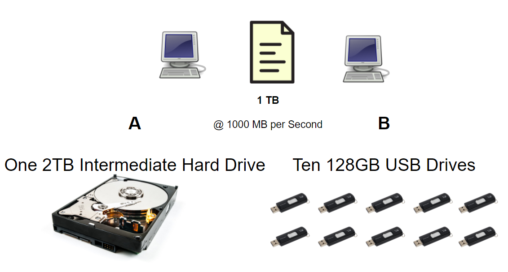

Learning Objectives
- Understand fundamental concepts of Big Data
- Justify the use (or lack of) Big Data technologies in your analysis
- Critically evaluate the differences in using a Data Platform and Coding it Yourself
Big Data is data whose scale, distribution, diversity and or timeliness require the use of new technical architectures and analytics to enable insights that unlock new sources of business value.
McKinsey & Co.; Big Data: The Next Frontier for Innovation, Competition, and Productivity
79% of enterprise executives agree that companies that do not embrace Big Data will lose their competitive position and face extinction
Source: Accenture
Volume
- * Relates to how much data there is
- * Whether a dataset is considered 'big' or not is dependent on the volume
- * Data is considered Big when it is too voluminous for traditional data storage methods
- * Big Data platforms provide a way to store incredibly large amounts of data as well the ability to process it efficiently

Velocity
- * Refers to the speed of data generation
- * For example, how fast data flows in from sources such as application logs, networks and social media sites
- * Typically the flow will be massive and continuous
- * Increasingly companies are looking to stream analytics and data so it available at the right time to make appropriate business decisions
- * Big Data platforms offer solutions to dealing with fast flowing data in terms of storage and processing

Variety
- * Refers to the heterogeniety of the data sources
- * In other words, how different the data sources are (unstructured vs structured etc)
- * With large flows of data from several of sources it is possible that there will be a variety of data types and structures
- * Big Data platforms can handle a variety of sources, structures and data types
- * Different types of data require different strategies which you will need to consider as part of your analysis

Veracity
- * Refers to the quality of the data
- * Checking the veracity of data sources is always challenging- never trust data as given
- * Enquire about the data preparation- has it been normalised already? Has it been subject to statistical manipulation (i.e. outliers removed)?
- * Where possible you should always ask to look at raw data
- * Determining veracity can be challenging to an organisations policies as well as externally determining authorship/ownership

Value
- * Refers to the business value of the data
- * Having access to vast amounts of fast flowing data is useless unless it can leveraged into something of value
- * How does this data add value to your business? What is the ROI?

Activity
- Think about some of the data you use regularly, how does it stack up against the 5 V's?
- Share your thoughts with your group and be prepared to feedback to the rest of the class
- Genetic sequencing and human genome mapping provide a detailed understanding of genetic makeup and lineage.
- The healthcare industry is looking toward these advances to help predict which illnesses a person is likely to get in their lifetime.
- While data has grown, the cost to perform this work has fallen dramatically.
- The cost to sequence one human genome fell from $100m in 2001 to $10k in 2011.
- Today it costs around $1k.
- A 2017 report showed it was possible to train a model to detect tumour in breast cancer patients that either matched or exceeded the performance of a pathologist who had unlimited time to examine the slides.
NLP
Natural Language Processing is a powerful tool that allows the analysis of text. Companies like Google and Amazon both make use of NLP and other technologies to give us a virtual assisstant experience.
Activity: In groups discuss and sketch how you think software such as Amazon Alexa produces personalised recommendations
- Your words are recorded
- The recording is sent to Amazon's server to be analysed (due to interpreting sounds taking up alot of computational power
- Important words are identified and corresponding functions are carried out (e.g. 'basketball' would open a sports app)
- The server then sends the information back to your device. If Alexa needs to say something it will follow a reverse process (identify the words it wants to give and convert them to the correct sounds)
Divide and Conquer
Most Big Data softwares use an approach called 'Divide and Conquer' where the data will be split into smaller 'chunks' and processed simultaneously across different nodes and the results combined. This process happens over several servers so if one fails the analysis can continue and the remaining can pick up the slack.
Which is Faster?
One 2TB Harddrive
- Moving 1000000MB @ 100MB per second would take 1000 seconds (or 16.7 minutes)
- Giving time for downloading and uploading, total time would be approximately 34 minutes
Ten 128GB USB drives
- Dividing the process between 10 USB sticks means each has to transfer 100GB (or 100000MB) each
- @1000MB per second this will take 100 seconds (or 1.7 minutes)
- Given each drive is downloading and uploading simultaneously, this would take 3.4 minutes approximately
Advantages
- Ability to access and process large volumes of data quickly
- Analysis run on larger datasets will be more reliable, representative and accurate as taking samples from data will not be necessary
- Faster analysis leads to a reduction in human utilisation, meaning more projects can be undertaken or better resourcing of analysts
- Projects finished in shorter time frames can lead to increased reputation amongst customers and products being brought to market
Disdvantages
- It is expensive
- Big Data technologies only provide a small amount of free processing before charging and costs can rack up quickly
- Therefore you do not have time to play around or make mistakes- time is money
- Big Data still requires a degree of competency from the user, it is not something that can just be picked up by anybody
- The nature of Big Data means you are exporting data externally, potentially bringing in cybersecurity risks
- It can be challenging to integrate Big Data output into your system
Activity
In breakout rooms read and discuss this article .
- Do you agree with what has been written?
- How do you think Big Data will persoanlly affect your role?
- Can you find other articles which support or argue against the use of Big Data technologies?
Visualisation Products
Data Management
Statistics Platforms
Cloud Based Platforms
Common Platforms
Activity
In Breakout Rooms:
- Discuss what software platforms you use in your role and how you use them
- What are the advantages and disadvantages of using them?
Advantages
Platforms
- Easy to use and do not require technical knowledge or skills
- More agile as 'drag and drop' options allow for quicker building of functions/models/visualisations
- Greater agility leads to lower costs as less time is spent on development
- Relatively simple to edit what you have built
- Often tech support available
Coding
- You have complete control over the whole process and can customise solour scheme and functionality in almost any way imaginable
- Data entry can be faster and more accurate (particularly when automated)
- Common coding langauges (R, Python, etc) are free to install and use
- You own the source code
- Most languages have active communities where you can ask for help
Disadvantages
Platforms
- Can be a steep learning curve and training will be required for each different software you use
- While platforms often have a wide variety of functions, they are still limited to whatever was built in by the developer
- Security and reliability issues around you not having complete control over your code/data
- If you want to change product it can be difficult to migrate your models/visualisations
- Licenses can be expensive
- You do not own the source code
Coding
- You have complete control over the whole process and can customise solour scheme and functionality in almost any way imaginable
- Learning to code is a daunting and long process
- Coding is constantly evolving and it is up to you to keep up with trends- which you may not have time to do
- Complicated codes take a long time to produce and require constant error checking and validation
- Easy to make mistakes but can be difficult to find the error
- Making small changes to large scripts not always simple and can lead to side effects
- Code is harder to understand for non-technical colleagues
Activity
Mr Jones works in a data analytics department and has been given a project to complete. He must design a dashboard that displays daily KPIs for his stakeholders. In teams you will be each be assigned a different product (Tableau, Python, etc) and will come up with arguments to convince Mr Jones to use your product. Each team will then be given 1 minute to pitch their product.
- Open Anaconda
- Click Environments
- Click Create
- Name it R and check the R box
- Wait a few minutes for the environments to be created
- Once ready, click on the triangle next to your new environment and select 'Open with Jupyter Notebook'
- Whenever you want to use R make sure you use this new environment, if you want to use Python make sure you use the environment called base(root)
- To create a R notebook, select new in the Jupyter navigator and select R
Learning Objectives
- Understand fundamental concepts of Big Data
- Justify the use (or lack of) Big Data technologies in your analysis
- Critically evaluate the differences in using a Data Platform and Coding it Yourself
Assignment
Justify the use (or lack of) Big Data technologies in your analysis
Required:
Written Justification (max 1500 words)
Things to consider:
- How does your company make use of Big Data technologies?
- Do you have opportunities to use them in your role?
- Do you think you could use these technologies effectively in your role?
- Do you think your company uses them effectively?
- What do you think the potential business impact of your companies attitude towards Big Data will be?